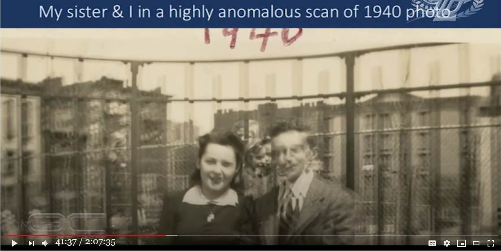
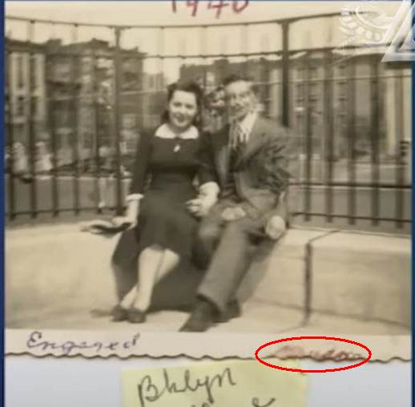

Paul Davids : 私が生まれる 7年前の写真に私と妹が写っていた → この謎を解く

上の写真は超常現象研究家である Paul Davids が講演で取り上げたもの。写真の中央部に注目。両端の成人男女の間に彼と妹の顔が見えている。Paul Davids はこの写真は超常現象だと主張している。
この写真の謎を以下で解明する。かつての銀塩フィルム写真の時代には「謎の脚が写り込んだ写真」などを何度か見かけたが、それらも以下の機序で説明できる。
履歴
(2020-09-07) 謎解きを追加。 (2020-09-07) 作成一部引用
・41:00-43:30 ・家族の写真・私が生まれる 7年前の写真。


一部引用
・動画が消された時に備えて、自動生成された文章を追加しておく。無編集。i'm going to 39:47 tell you are hard to believe 39:49 and they were hard to believe for me too 39:51 i want to assure you 39:52 that nothing of what i'm claiming is 39:55 made up 39:56 or invented i'm just being honest i'm 39:59 just going to convey 40:00 the facts as they happen to me and 40:03 here's a big one 40:05 all right that's me with my mother 40:08 who's deceased she died at age 92. 40:12 and this is a picture taken on the day 40:14 of 40:16 their engagement i wrote 1941 there it 40:20 might be 1940 i'm not sure but it 40:21 doesn't really matter it's my mom 40:23 mom and dad and 40:27 this picture that's all blurred and 40:31 you know you can't really make it out 40:33 there's something wrong with this 40:34 picture 40:35 when i scanned it i didn't look at it 40:37 very carefully i was 40:39 scanning family pictures to put in an 40:41 album i scanned this one i said oh 40:42 that's a dud 40:44 should i throw it away you know does 40:46 this even belong in a family album 40:48 and i said well it's historic i'll keep 40:50 it anyway 40:52 and it wasn't until about 10 years later 40:55 that i took a careful look at the 40:56 picture and i want to show you what i 40:59 discovered 41:00 okay you see it says 1940 at the top 41:03 it says engaged it says brooklyn college 41:07 now look this is a sticky on it was 41:10 in an album and it's not blurred the 41:13 word engaged is 41:14 not blurred 1940 is not blurred but 41:17 there's something 41:18 really weird going on in that picture 41:21 and i'm going to go closer in 41:23 to start talking about it in detail my 41:26 dad's got two left arms 41:28 there 41:32 they're holding hands there um let's go 41:35 closer still you can see how 41:37 in focus everything is except the 41:39 picture itself 41:42 now look my father has two noses here 41:46 this nose is his nose as uh he looked as 41:50 a young man at that age 41:51 this was his nose when he was like 40 or 41:54 50 years older than that 41:56 it was larger he has two ears here 42:00 he has three ties 42:04 she has one and a half pendants 42:07 now if you want to say double exposure 42:09 no no double exposure everything would 42:11 be she he has three ties she'd have 42:13 three pendants 42:14 but that isn't what it is but the most 42:17 strange thing of all 42:18 is that in between their two heads 42:22 are two children 42:25 this was taken seven years before i was 42:29 born 42:31 that's me as a boy that's my sister 42:37 and behind there's a blonde woman 42:42 you can see her partner hair her hair 42:44 her nose there 42:46 i don't know who that is 42:49 but i know she also shows up in the left 42:53 side of the picture i want to go in 42:56 closer so now you can really see 43:01 that's definitely me as a boy that's 43:03 definitely 43:04 my sister i would say that she was 43:07 around 43:10 for or five and i was 43:14 probably eight or nine so 43:18 you want to believe in time travel how 43:20 does the picture taken in 1940 43:22 have me and her in it i haven't got a 43:25 clue and i almost threw the picture away 43:29 now i said my mother died in 43:33 she was 92 died in august of 2013.講演動画（2:07:35）
Non-Conventional Consciousness and it's link to Motion Pictures 2020-09-07 (2020-09-07)
前置
・この写真の謎解きを追加しておく。問題の写真の謎を解く
・フィルム写真の印画紙は反って中央部分が盛り上がることが多い（*1）。その中央部分には注目している被写体がくる。この場合であれば、婚約したふたりとか、兄妹とか。 ・閉じられたアルバムの向かい合った面に貼り付けた写真の中央部の盛り上がった箇所の表面どうしが密着し、開いた時にその密着箇所が剥がれて転写されたのだろう。 ・わかりやすく言えば…。アルバムの左ページに問題の婚約時の写真があり、右ページに兄妹の写真があったとする。アルバムは閉じた状態で保管するから、写真の表面どうしが密着してはりつくことがある（*2）。アルバムを開いた時に、密着部分の感光部分が薄く剥がれて転写されたのではないか。（兄妹の顔が剥がれた写真は破棄されたのでもう存在しないのだろう。） ・図解すると… ・問題の写真の右下余白部分の書き込み跡から、この写真がアルバムから剥がされたものであることが推定できる。  ・Paul Davids はアルバムから剥がされた状態の写真しか見ていないから、「私が生まれる 7年前の写真に私と妹が写っていた」ので超常現象だと思い込んだのだろう。蛇足
・なお、Paul Davids は否定しているが、婚約したふたりの写真は多重露光になっている。Paul Davids が多重露光を否定する理由は ・母のネックレスが二重になっているが、父のネクタイが三重になっている ・父の左腕が二重になっている。それも大きく離れて。 だが、母が比較的じっとしていただけ。 ・Paul Davids はこれらの二重、三重の箇所も多重露光ではなく、超常現象だと解釈しているが、無理がある。 ・Paul Davids は映画製作者であり、映像の専門家。なのに素人の私がすぐに思いつくようなことにまるで気づかないのは、超常現象だという思い込みに支配されたためだろう。（*1）
・現像された写真の裏面はレジン・コートのため水を吸収しないが、感光材料面は水を吸収するので伸びる。そのため映像面が凸になる形状で反る。（*2）
・写真の表面どうしがはりつくことは珍しいことではない。具体例が下。表面同士がひっついた古い写真を、きれいに剥がす方法はありませんか？ 20?40年以上前の古い写真なのですが、10年ぐらい前に湿度の高い倉庫に保管しました。 数年後取り出して開こうとしたら、写真の表面同士がくっついてしまって見る事ができないのです。 （今のようなフィルムで挟むようなアルバムではなく、三角コーナーのようなもので固定するタイプなので） 破れないようにきれいに剥がす方法をご存知でしたらぜひ教えてください。 ref: 表面同士がひっついた古い写真を、きれいに剥がす方法はあり... - Yahoo!知恵袋 - https://detail.chiebukuro.yahoo.co.jp/qa/question_detail/q1046328970写真と写真がくっついてしまって剥がすのを失敗してしまいました このようになってしまった写真を元に戻したいのですが、方法がわかる方おしえてください！ ref: 写真と写真がくっついてしまって剥がすのを失敗してしまいました - ... - Yahoo!知恵袋 - https://detail.chiebukuro.yahoo.co.jp/qa/question_detail/q13175685323印刷面がくっついてしまった写真について。 私の保管が悪く、昔写真屋さんで印刷した写真と先日自宅でプリントした写真がくっついてしまいました 焦ってはがしてしまい 古い方の写真に新 しい方の写真の印刷面が残ってしまいました 古い写真なのでフィルム等残ってなく、綺麗になればとおもうのですが剥がしてしまった以上、なすすべはないのでしょうか？ ref: 印刷面がくっついてしまった写真について。私の保管が悪く、昔写真屋... - Yahoo!知恵袋 - https://detail.chiebukuro.yahoo.co.jp/qa/question_detail/q14133236974(2020-09-08)
初出
Paul Davids : 私が生まれる 7年前の写真に私と妹が写っていた。 （＋謎解き） (2020-09-08)